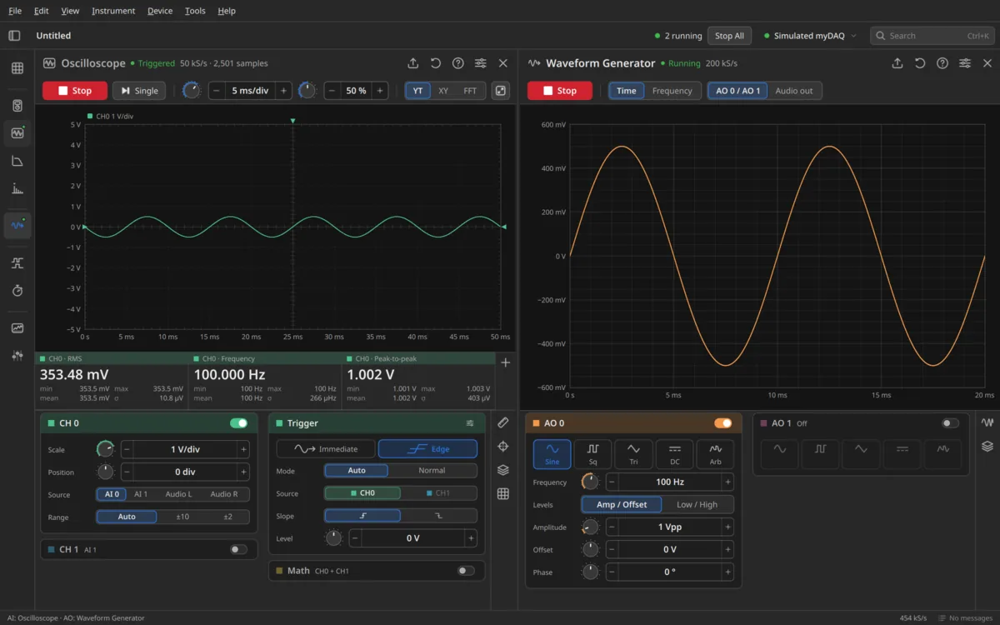
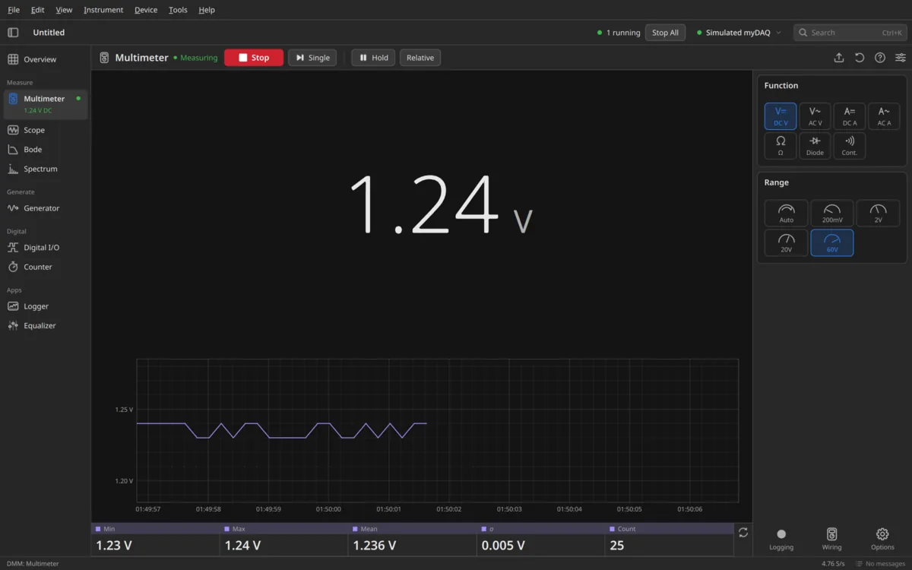
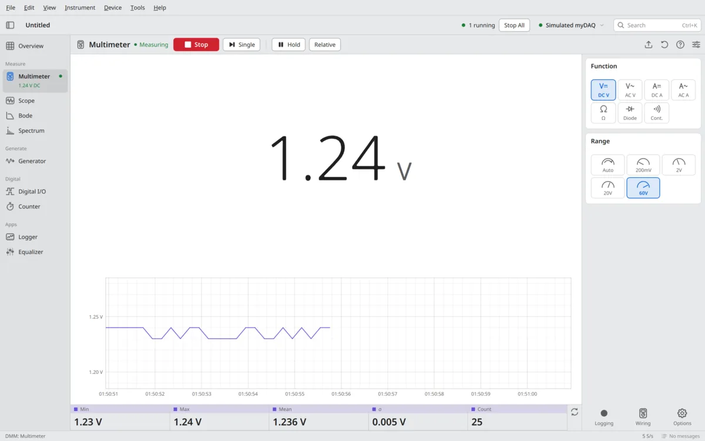
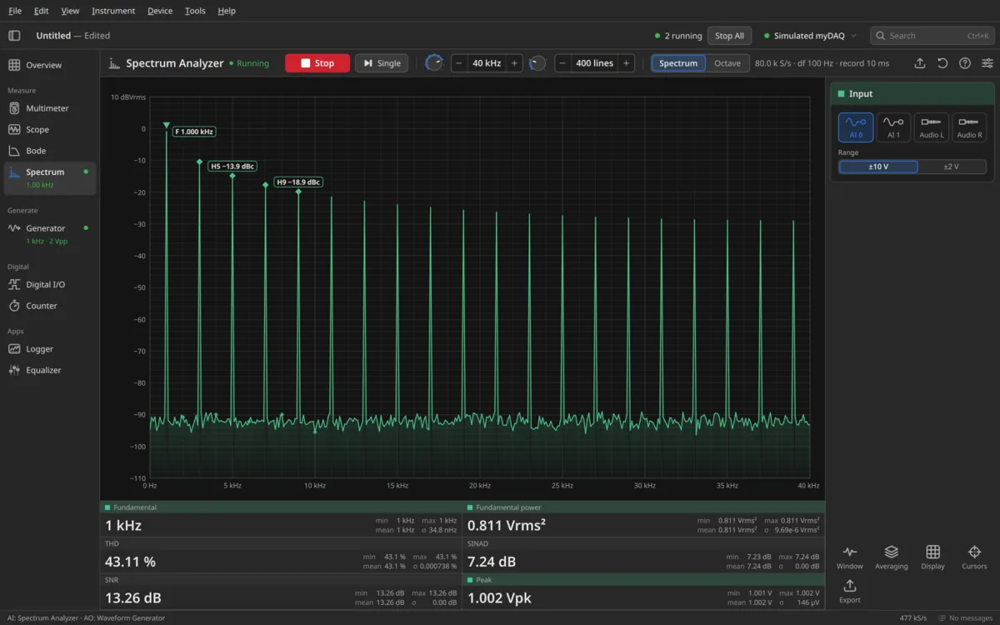
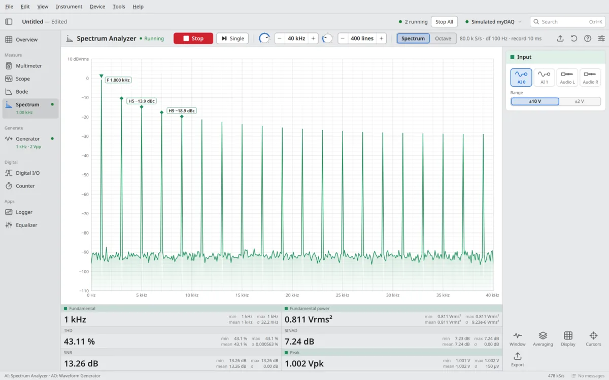
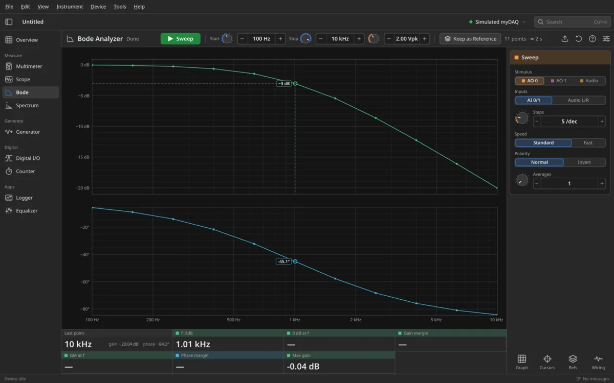
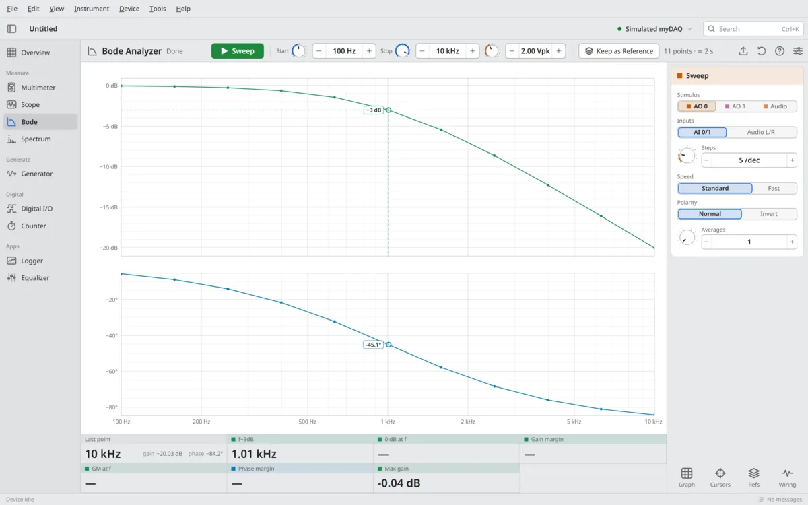
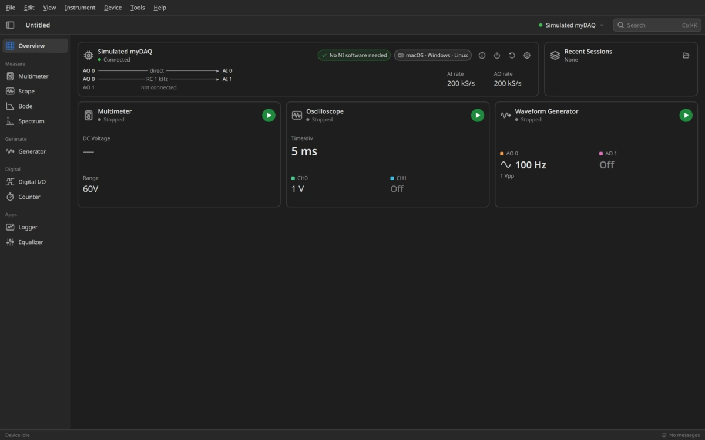
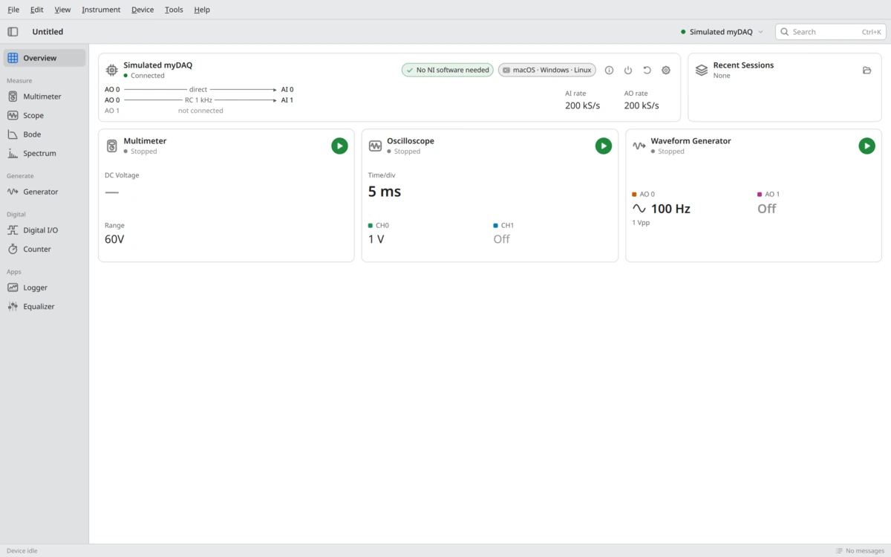

The whole bench in one window.
Run several at once. Put two side by side.
Multimeter
Volts, amps, ohms, diode, continuity.
Oscilloscope
Two channels, triggers, math, FFT, XY.
Waveform Generator
Two outputs, sweeps, your own shapes.
Bode Analyzer
Gain and phase, −3 dB marker.
Spectrum Analyzer
Harmonics, THD, SNR, spectrogram.
Digital I/O
Eight lines, LEDs, switches, patterns.
Counter/Timer
Frequency, period, edges, pulse trains.
Data Logger
Long recordings to a text file.
Audio Equalizer
Audio in, three bands, audio out.








No myDAQ? Practise anyway.
A simulated myDAQ is built in, with a test circuit wired to it. Every instrument works.
mybench --simulated
Talks to the myDAQ directly.
Over USB. No NI software.
macOS14+ · Apple Silicon & Intel
Nothing to set up.
Tested with a myDAQLinuxFlatpak · AppImage · .deb · .rpm
One USB rule. The .deb and .rpm add it for you.
Tested with a myDAQWindows10 / 11 · x64
No driver setup. Works alongside NI ELVISmx.
Beta
The myDAQ needs a current NI firmware. A myDAQ that was used once with a recent NI ELVISmx or NI-DAQmx has it. Install
Get mybench.
Free. In beta, with a few students testing it. Tell us what breaks.